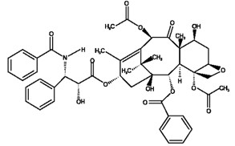

Introduction
Cisplatin is a transition metal complex originally reported in the mid 19th century. Further studies 100 years later by Barnett Rosenberg showed that platinum was an extremely useful tool, killing cancer cells in human tumor cell lines. This discovery led to the widespread use of cisplatin as a cancer drug which is in continued use even today. By impairing a cell’s ability to repair nuclear DNA damage, cisplatin is able to initiate apoptosis and kill tumor cells. In addition to its efficacy against cancer it is also an extremely cost effective strategy for treating tumors. Cisplatin is a wonder drug has changed the face of cancer research and treatment for the past 50 years.

Discovery
Barrett Rosenberg was the first scientist to discover the utility of cisplatin, also known as cis-diamminedichloroplatinum (1). His initial research dealt with bacterial growth and its relationship to electric fields (2). What Rosenberg observed was a 300 fold increase in the size of the bacteria (Figure 1). He attributed this to the fact that somehow the platinum conducting plates were inducing cell growth but inhibiting cell division. It was later deduced that the platinum species responsible for this was cisplatin. Rosenberg hypothesized that if cisplatin could inhibit bacterial cell division it could also stop tumor cell growth. This conjecture has proven correct and has led to the implementation of cisplatin as a cancer therapy for the past 30 years.


Figure 1. Phase contrast photomicrograph of normal E. coli (left) and E coli in 8 ppm cisplatin (right).
Mechanism of Action
The survival of a cell is constantly in danger due to DNA damage from outside and from the incorrect incorporation of base pairs during replication. Two mechanisms exist in order to fix these problems. Cisplatin takes advantage of these repair mechanisms to effect programmed cell death, namely apoptosis.
Nuclear Excision Repair
Nuclear Excision Repair (NER) is the cell response to outside damage caused by ultraviolet rays from the sun and other types of chemical alteration to the DNA (3). Alterations included thymine dimers and cyclobutyl dimers. NER enzymes take out a 24-30 base pair section of the DNA containing the damaged nucleotide and a polymerase fills in the excised portion.
Mismatch Repair
Mismatch repair is employed when base pairs are added incorrectly due to replication (4). In a separate mechanism from NER the mismatch repair enzymes replace the base pairs and restore normal DNA composition to the cell.
Cisplatin and its Role in Programmed Cell Death
When cisplatin is introduced into the nucleus it forms adducts to the purine bases, Adenine and Guanine (5) (Figure 2). This causes torsional strain on the DNA strand and recruits the Nuclear Excision Repair of Mismatch repair enzymes to fix the nuclear stress. Since the platinum adduct is a non-native structure, the repair mechanisms cannot effectively remove the damage. The DNA is permanently damaged and the cell could potentially be defective: thus, the cell undergoes apoptosis and sacrifices the cell for the greater good of the organism (6).

Figure 2. Crystal structure of platinum coordinated DNA.
Cost of Cisplatin
It has been demonstrated that the average age in the United States (7) and in most of the world is increasing due to advances in health care and technology. However, with this increase in longevity come new health problems. Cancer is said to be a disease of the old. The longer an organism lives the more genetic mutations and damage it accumulates. This often leads to cancer in later stages in life. Thus, it is easy to see a need for safe, efficacious and cost effective therapies in order to treat cancer in a larger population of older people. The ability of governments to lower costs of cancer therapies will allow treatment of a larger number of people and in this way, governments can better fulfill their job as a social welfare entity.
Financial examinations of cisplatin are varied and there are different boundary conditions when studying the cost of cisplatin treatment such as length of care and how many times therapy needs to be used before the tumor is completely gone. Initially cisplatin was the sole medicine given during a cancer treatment but modern protocols call for co-adminstration with other cancer fighting drugs. Typically cisplatin is administered with Paclitaxel (Figure 3) which functions as a mitotic inhibitor. In the UK the average course of treatment for lung cancer is four weeks and costs around $80,000 US. Italy (8) and Canada (9,10) typically sees costs of approximately $70,000 US. The US fairs the best with costs of around $50,000 US (11). These are certainly large amounts of money but one has to keep in mind a point of reference when considering costs of cisplatin combination therapies. Heart transplants cost $210,000 on average in the US11 while liver and kidney transplants cost up to $400,000 and $150,000 respectively. In light of this, cisplatin combination treatment is viable option in comparison with other terminal illness treatments.

Figure 3. Paclitaxel.
Conclusion
Cisplatin was a chance discovery that eventually sprinted to the forefront of cancer therapies and research. By creating platinum adducts with DNA strands, cisplatin is able to derail a cell’s normal DNA repair mechanisms and cause it to undergo apoptosis. The synthesis of cisplatin is straight forward and cost effective which leads to a cheaper cancer therapy. Because of this cisplatin can be administered to wide range of people from varied economic backgrounds. Even after 50 years, cisplatin is a key player in the fight against cancer.
Resources
Cisplatin in a Clinical Setting
Chemical Information
Side Effects
Cisplatin Nanoparticles
Cisplatin in Animals
References
(1) Rosbenberg, B., Van Camp, L., Krigas, T., Inhibition of Cell Division in Escherichia coli by Electrolysis Products from a Platinum Electrode. Nature, 205, 698 (1965).
(2) Rosenberg, B., Van Camp, L., Grimley, E., Thomson, A., The Inhibition of Growth or Cell Division in Escherichia coli by Different Ionic Species of Platinum(IV) Complexes. J. Biol. Chem., 242, 1347-1352 (1967).
(3) Wood, R., Nucleotide Excision Repair in Mammalian Cells. J. Biol. Chem, 272, 23465-23468 (1997).
(4) Modrick, P., Strand-specific Mismatch Repair in Mammalian Cells. J. Biol. Chem, 272, 24727 (1997).
(5) Fichtinger-Sherpman, A., van der Veer, J., den Hatog, J., Lohman, P., Adducts of the antitumor drug cis-diamminedichloroplatinum(II) with DNA: formation, identification, and quantitation. Biochemsitry , 24, 707-712 (1985).
(6) Agarwal, M., Taylor, W., Chernov, M., Chernova, O., Stark, G., The p53 Network. J. Biol. Chem., 273,1 (1998).
(7) http://www.cdc.gov/nchs/data/hus/hus06.pdf#027
(8) Novello, S., Cost-minimisation analysis comparing gemcitabine/cisplatin, paclitaxel/carboplatin and vinorelbine/cisplatin in the treatment of advanced non-small cell lung cnacer in Italy. Lung Cancer, 48, 379-387 (2005).
(9) Earle, C., Evans, W., Cost-effectiveness of paclitaxel plus cisplatin in advanced non-small-cell lung cancer. Brit. J. Cancer, 80, 815-820 (1999).
(10) Covens, A., Boucher, S., Roche, K., Macdonald, M., Pettitt, D., Jolain, B., Souetre, E., Riviere, M., Is Paclitaxel and Cisplatin a Cost-Effective First-Line Therapy for Advanced Ovarian Carcinoma. Cancer, 77, 2086-2091 (1996).
- Alzheimer's 1 2
- Antibiotics
- Antifouling Paint
- Arthritis
- Ayurvedic Medicine
- Breast Feeding
- Cancer Therapy
- Cattle Feed
- Cerebral Ischemia
- Chelation Therapy
- Chernobyl
- Chicken Feed
- Chocolate
- Cigarettes
- Coal 1 2
- Copper Mining
- Cremation
- Diabetes
- Electronic Waste
- Hat Making
- Hard Metal Disease
- Hybrid Cars
- Imaging 1 2 3 4
- Industrial Pollution
- Jewelry Allergy
- Lead Poisoning
- Lewisite
- Magnetic Particles
- Makeup
- Mountain Top Removal
- MRI Imaging
- Neurotoxicity
- Nuclear Power
- Nuclear Weapons
- Ouch Ouch Disease
- Peripheral Neuropathy
- PET Imaging
- Photodynamic Therapy
- Phytoremediation
- Pregnancy
- Radioactivity 1 2
- Seafood
- Sunscreens
- Tattoos
- Vaccines
- Wound Healing